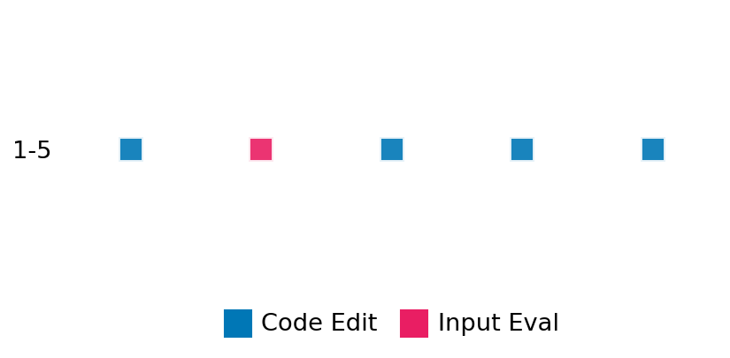

SETTING:
You're an autonomous programmer tasked with solving a specific problem. You are to use the commands defined below to accomplish this task. Every message you send incurs a cost—you will be informed of your usage and remaining budget by the system.
You will be evaluated based on the best-performing piece of code you produce, even if the final code doesn't work or compile (as long as it worked at some point and achieved a score, you will be eligible).
Apart from the default Python packages, you have access to the following additional packages:
- cryptography
- cvxpy
- cython
- dace
- dask
- diffrax
- ecos
- faiss-cpu
- hdbscan
- highspy
- jax
- networkx
- numba
- numpy
- ortools
- pandas
- pot
- psutil
- pulp
- pyomo
- python-sat
- pythran
- scikit-learn
- scipy
- sympy
- torch
YOUR TASK:
Your objective is to define a class named `Solver` in `solver.py` with a method:
```
class Solver:
def solve(self, problem, **kwargs) -> Any:
"""Your implementation goes here."""
...
```
IMPORTANT: Compilation time of your init function will not count towards your function's runtime.
This `solve` function will be the entrypoint called by the evaluation harness. Strive to align your class and method implementation as closely as possible with the desired performance criteria.
For each instance, your function can run for at most 10x the reference runtime for that instance. Strive to have your implementation run as fast as possible, while returning the same output as the reference function (for the same given input). Be creative and optimize your approach!
Your messages should include a short thought about what you should do, followed by a _SINGLE_ command. The command must be enclosed within ``` and ```, like so:
<Reasoning behind executing the command>
```
<command>
```
IMPORTANT: Each set of triple backticks (```) must always be on their own line, without any other words or anything else on that line.
Here are the commands available to you. Ensure you include one and only one of the following commands in each of your responses:
- `edit`: Replace a range of lines with new content in a file. This is how you can create files: if the file does not exist, it will be created. Here is an example:
```
edit
file: <file_name>
lines: <start_line>-<end_line>
---
<new_content>
---
```
The command will:
1. Delete the lines from <start_line> to <end_line> (inclusive)
2. Insert <new_content> starting at <start_line>
3. If both <start_line> and <end_line> are 0, <new_content> will be prepended to the file
Example:
edit
file: solver.py
lines: 5-7
---
def improved_function():
print("Optimized solution")
---
- `ls`: List all files in the current working directory.
- `view_file <file_name> [start_line]`: Display 100 lines of `<file_name>` starting from `start_line` (defaults to line 1).
- `revert`: Revert the code to the best-performing version thus far.
- `reference <string>`: Query the reference solver with a problem and receive its solution. If the problem's input is a list, this command would look like:
```
reference [1,2,3,4]
```
- `eval_input <string>`: Run your current solver implementation on the given input. This is the only command that shows stdout from your solver along with both solutions. Example:
```
eval_input [1,2,3,4]
```
- `eval`: Run evaluation on the current solution and report the results.
- `delete`: Delete a range of lines from a file using the format:
```
delete
file: <file_name>
lines: <start_line>-<end_line>
The command will delete the lines from <start_line> to <end_line> (inclusive)
Example:
delete
file: solver.py
lines: 5-10
```
- `profile <filename.py> <input>`: Profile your currently loaded solve method's performance on a given input. Shows the 25 most time-consuming lines. Requires specifying a python file (e.g., `solver.py`) for validation, though profiling runs on the current in-memory code.
Example:
```
profile solver.py [1, 2, 3]
```
- `profile_lines <filename.py> <line_number1, line_number2, ...> <input>`: Profiles the chosen lines of the currently loaded code on the given input. Requires specifying a python file for validation.
Example:
```
profile_lines solver.py 1,2,3 [1, 2, 3]
```
**TIPS:**
After each edit, a linter will automatically run to ensure code quality. If there are critical linter errors, your changes will not be applied, and you will receive the linter's error message. Typically, linter errors arise from issues like improper indentation—ensure your edits maintain proper code formatting.
**Cython Compilation:** Edits creating or modifying Cython (`.pyx`) files will automatically trigger a compilation attempt (requires a `setup.py`). You will be notified if compilation succeeds or fails. If it fails, the edit to the `.pyx` file will be automatically reverted.
If the code runs successfully without errors, the in-memory 'last known good code' will be updated to the new version. Following successful edits, you will receive a summary of your `solve` function's performance compared to the reference.
If you get stuck, try reverting your code and restarting your train of thought.
Do not put an if __name__ == "__main__": block in your code, as it will not be ran (only the solve function will).
Keep trying to better your code until you run out of money. Do not stop beforehand!
**GOALS:**
Your primary objective is to optimize the `solve` function to run as as fast as possible, while returning the optimal solution.
You will receive better scores the quicker your solution runs, and you will be penalized for exceeding the time limit or returning non-optimal solutions.
Below you find the description of the task you will have to solve. Read it carefully and understand what the problem is and what your solver should do.
**TASK DESCRIPTION:**
Graph Laplacian Computation
Compute the Laplacian matrix of a given sparse, undirected graph A. The task involves calculating either the standard combinatorial Laplacian (L = D - A, where D is the degree matrix) or the symmetric normalized Laplacian (I - D^-1/2 A D^-1/2), based on an input flag. The input graph is provided in Compressed Sparse Row (CSR) format.
Input:
A dictionary representing the sparse graph A (CSR format) and the type of Laplacian:
- "data": A list of numbers representing the non-zero graph edge weights.
- "indices": A list of column indices corresponding to the data values.
- "indptr": A list of row index pointers.
- "shape": A list or tuple `[n, n]` representing the graph dimensions.
- "normed": A boolean value: `false` for the standard Laplacian, `true` for the normalized Laplacian.
Example input:
{
"data": [1.0, 1.0, 2.0, 2.0], # Symmetric edges
"indices": [1, 0, 2, 1],
"indptr": [0, 1, 3, 4],
"shape": [3, 3],
"normed": false
}
Output:
A dictionary with key "laplacian" containing the CSR components of the computed Laplacian matrix L:
- "data": A numpy array of the non-zero values in L.
- "indices": A numpy array of column indices for the data values.
- "indptr": A numpy array of row index pointers.
- "shape": A tuple `(n, n)`.
Example output:
{
"laplacian": {
"data": [1.0, -1.0, -1.0, 3.0, -2.0, -2.0, 2.0],
"indices": [0, 1, 0, 1, 2, 1, 2],
"indptr": [0, 2, 5, 7],
"shape": [3, 3]
}
}
Category: graph
Below is the reference implementation. Your function should run much quicker.
import random
from typing import Any
import numpy as np
import scipy.sparse
import scipy.sparse.csgraph
| 01: def solve(self, problem: dict[str, Any]) -> dict[str, dict[str, Any]]:
| 02: """
| 03: Computes the graph Laplacian using scipy.sparse.csgraph.laplacian.
| 04:
| 05: The output Laplacian is returned in CSR format components.
| 06:
| 07: :param problem: A dictionary representing the graph (CSR) and `normed` flag.
| 08: :return: A dictionary with key "laplacian" containing CSR components:
| 09: "data": List of non-zero Laplacian matrix entries.
| 10: "indices": List of column indices.
| 11: "indptr": List of index pointers.
| 12: "shape": Tuple (n, n).
| 13: Returns empty dict components on failure.
| 14:
| 15:
| 16: NOTE: Your solution must pass validation by:
| 17: 1. Returning correctly formatted output
| 18: 2. Having no NaN or infinity values
| 19: 3. Matching expected results within numerical tolerance
| 20: """
| 21: try:
| 22: graph_csr = scipy.sparse.csr_matrix(
| 23: (problem["data"], problem["indices"], problem["indptr"]), shape=problem["shape"]
| 24: )
| 25: normed = problem["normed"]
| 26: except Exception as e:
| 27: return {
| 28: "laplacian": {
| 29: "data": [],
| 30: "indices": [],
| 31: "indptr": [],
| 32: "shape": problem.get("shape", (0, 0)),
| 33: }
| 34: }
| 35:
| 36: try:
| 37: # Compute the Laplacian
| 38: L = scipy.sparse.csgraph.laplacian(graph_csr, normed=normed)
| 39:
| 40: # Ensure output is CSR format
| 41: if not isinstance(L, scipy.sparse.csr_matrix):
| 42: L_csr = L.tocsr()
| 43: else:
| 44: L_csr = L
| 45: L_csr.eliminate_zeros() # Clean up
| 46:
| 47: except Exception as e:
| 48: return {
| 49: "laplacian": {"data": [], "indices": [], "indptr": [], "shape": problem["shape"]}
| 50: }
| 51:
| 52: solution = {
| 53: "laplacian": {
| 54: "data": L_csr.data,
| 55: "indices": L_csr.indices,
| 56: "indptr": L_csr.indptr,
| 57: "shape": L_csr.shape,
| 58: }
| 59: }
| 60: return solution
| 61:
This function will be used to check if your solution is valid for a given problem. If it returns False, it means the solution is invalid:
import random
from typing import Any
import numpy as np
import scipy.sparse
import scipy.sparse.csgraph
| 001: def is_solution( problem: dict[str, Any], solution: dict[str, dict[str, Any]]) -> bool:
| 002: """
| 003: Check if the provided matrix is the correct graph Laplacian.
| 004:
| 005: Checks structure, CSR components, and numerical closeness of data values
| 006: to the reference scipy.sparse.csgraph.laplacian output.
| 007:
| 008: :param problem: The problem definition dictionary.
| 009: :param solution: The proposed solution dictionary containing Laplacian CSR components.
| 010: :return: True if the solution is valid and correct, False otherwise.
| 011: """
| 012: required_keys = ["data", "indices", "indptr", "shape", "normed"]
| 013: if not all(k in problem for k in required_keys):
| 014: logging.error(f"Problem dictionary missing required keys: {required_keys}")
| 015: return False
| 016: normed = problem["normed"]
| 017:
| 018: # Validate solution structure
| 019: if not isinstance(solution, dict) or "laplacian" not in solution:
| 020: logging.error("Solution format invalid: missing 'laplacian' key.")
| 021: return False
| 022: L_solution_dict = solution["laplacian"]
| 023: if not isinstance(L_solution_dict, dict) or not all(
| 024: k in L_solution_dict for k in ["data", "indices", "indptr", "shape"]
| 025: ):
| 026: logging.error("Solution 'laplacian' dict missing CSR components.")
| 027: return False
| 028:
| 029: # Handle potential failure case from solve()
| 030: if (
| 031: not L_solution_dict["data"] and not L_solution_dict["indptr"]
| 032: ): # Check if it looks like failure output
| 033: logging.warning(
| 034: "Proposed solution seems empty (potential failure). Checking reference."
| 035: )
| 036: try:
| 037: graph_csr = scipy.sparse.csr_matrix(
| 038: (problem["data"], problem["indices"], problem["indptr"]), shape=problem["shape"]
| 039: )
| 040: ref_L = scipy.sparse.csgraph.laplacian(graph_csr, normed=normed)
| 041: if not isinstance(ref_L, scipy.sparse.spmatrix) or ref_L.nnz == 0:
| 042: # Check if reference is also effectively empty/invalid
| 043: logging.info(
| 044: "Reference solver also produced empty/invalid result. Accepting failure."
| 045: )
| 046: return True
| 047: else:
| 048: logging.error(
| 049: "Reference solver succeeded, but proposed solution was empty/invalid."
| 050: )
| 051: return False
| 052: except Exception:
| 053: logging.info("Reference solver also failed. Accepting empty solution.")
| 054: return True # Both failed
| 055:
| 056: # Reconstruct proposed Laplacian from solution
| 057: try:
| 058: proposed_L_csr = scipy.sparse.csr_matrix(
| 059: (L_solution_dict["data"], L_solution_dict["indices"], L_solution_dict["indptr"]),
| 060: shape=L_solution_dict["shape"],
| 061: )
| 062: if proposed_L_csr.shape != problem["shape"]:
| 063: logging.error(
| 064: f"Proposed Laplacian shape {proposed_L_csr.shape} != problem shape {problem['shape']}."
| 065: )
| 066: return False
| 067: except Exception as e:
| 068: logging.error(f"Failed to reconstruct proposed Laplacian from solution data: {e}")
| 069: return False
| 070:
| 071: # Compute reference Laplacian
| 072: try:
| 073: graph_csr = scipy.sparse.csr_matrix(
| 074: (problem["data"], problem["indices"], problem["indptr"]), shape=problem["shape"]
| 075: )
| 076: ref_L_raw = scipy.sparse.csgraph.laplacian(graph_csr, normed=normed)
| 077: # Ensure reference is CSR for comparison
| 078: if not isinstance(ref_L_raw, scipy.sparse.csr_matrix):
| 079: ref_L_csr = ref_L_raw.tocsr()
| 080: else:
| 081: ref_L_csr = ref_L_raw
| 082: ref_L_csr.eliminate_zeros() # Canonical form
| 083:
| 084: except Exception as e:
| 085: logging.error(f"Error computing reference solution: {e}")
| 086: return False # Cannot verify if reference fails
| 087:
| 088: # Compare proposed CSR with reference CSR
| 089: # 1. Compare shapes (already done)
| 090: # 2. Compare structure (indices, indptr) - should be identical for canonical CSR
| 091: if not np.array_equal(proposed_L_csr.indices, ref_L_csr.indices) or not np.array_equal(
| 092: proposed_L_csr.indptr, ref_L_csr.indptr
| 093: ):
| 094: logging.error(
| 095: "CSR structure (indices or indptr) of proposed Laplacian does not match reference."
| 096: )
| 097: return False
| 098:
| 099: # 3. Compare data values with tolerance
| 100: rtol = 1e-5
| 101: atol = 1e-8
| 102: if not np.allclose(proposed_L_csr.data, ref_L_csr.data, rtol=rtol, atol=atol):
| 103: max_diff = (
| 104: np.max(np.abs(proposed_L_csr.data - ref_L_csr.data))
| 105: if len(proposed_L_csr.data) > 0
| 106: else 0
| 107: )
| 108: logging.error(
| 109: "CSR data values of proposed Laplacian do not match reference within tolerance."
| 110: )
| 111: logging.error(f"Max absolute difference in data: {max_diff:.3e}")
| 112: return False
| 113:
| 114: logging.debug("Solution verification successful.")
| 115: return True
| 116:
 AlgoTuner Trajectory
AlgoTuner Trajectory
AlgoTune Task:
graph_laplacian
Model:
Claude Opus 4
Speedup
Fail
Total Budget
$1.00
Initial System Prompt
AlgoTune Task Description
Graph Laplacian Computation
Compute the Laplacian matrix of a given sparse, undirected graph A. The task involves calculating either the standard combinatorial Laplacian (L = D - A, where D is the degree matrix) or the symmetric normalized Laplacian (I - D^-1/2 A D^-1/2), based on an input flag. The input graph is provided in Compressed Sparse Row (CSR) format.
Input:
A dictionary representing the sparse graph A (CSR format) and the type of Laplacian:
- "data": A list of numbers representing the non-zero graph edge weights.
- "indices": A list of column indices corresponding to the data values.
- "indptr": A list of row index pointers.
- "shape": A list or tuple `[n, n]` representing the graph dimensions.
- "normed": A boolean value: `false` for the standard Laplacian, `true` for the normalized Laplacian.
Example input:
{
"data": [1.0, 1.0, 2.0, 2.0], # Symmetric edges
"indices": [1, 0, 2, 1],
"indptr": [0, 1, 3, 4],
"shape": [3, 3],
"normed": false
}
Output:
A dictionary with key "laplacian" containing the CSR components of the computed Laplacian matrix L:
- "data": A numpy array of the non-zero values in L.
- "indices": A numpy array of column indices for the data values.
- "indptr": A numpy array of row index pointers.
- "shape": A tuple `(n, n)`.
Example output:
{
"laplacian": {
"data": [1.0, -1.0, -1.0, 3.0, -2.0, -2.0, 2.0],
"indices": [0, 1, 0, 1, 2, 1, 2],
"indptr": [0, 2, 5, 7],
"shape": [3, 3]
}
}
Category: graph
Reference Implementation
import random
from typing import Any
import numpy as np
import scipy.sparse
import scipy.sparse.csgraph
def solve(self, problem: dict[str, Any]) -> dict[str, dict[str, Any]]:
"""
Computes the graph Laplacian using scipy.sparse.csgraph.laplacian.
The output Laplacian is returned in CSR format components.
:param problem: A dictionary representing the graph (CSR) and `normed` flag.
:return: A dictionary with key "laplacian" containing CSR components:
"data": List of non-zero Laplacian matrix entries.
"indices": List of column indices.
"indptr": List of index pointers.
"shape": Tuple (n, n).
Returns empty dict components on failure.
NOTE: Your solution must pass validation by:
1. Returning correctly formatted output
2. Having no NaN or infinity values
3. Matching expected results within numerical tolerance
"""
try:
graph_csr = scipy.sparse.csr_matrix(
(problem["data"], problem["indices"], problem["indptr"]), shape=problem["shape"]
)
normed = problem["normed"]
except Exception as e:
return {
"laplacian": {
"data": [],
"indices": [],
"indptr": [],
"shape": problem.get("shape", (0, 0)),
}
}
try:
# Compute the Laplacian
L = scipy.sparse.csgraph.laplacian(graph_csr, normed=normed)
# Ensure output is CSR format
if not isinstance(L, scipy.sparse.csr_matrix):
L_csr = L.tocsr()
else:
L_csr = L
L_csr.eliminate_zeros() # Clean up
except Exception as e:
return {
"laplacian": {"data": [], "indices": [], "indptr": [], "shape": problem["shape"]}
}
solution = {
"laplacian": {
"data": L_csr.data,
"indices": L_csr.indices,
"indptr": L_csr.indptr,
"shape": L_csr.shape,
}
}
return solutionBest AlgoTuner-Generated Code
solver.py
import numpy as np
import scipy.sparse
import scipy.sparse.csgraph
class Solver:
def solve(self, problem):
"""Compute the graph Laplacian efficiently."""
try:
# Extract CSR components
data = problem["data"]
indices = problem["indices"]
indptr = problem["indptr"]
shape = problem["shape"]
normed = problem["normed"]
# Create the sparse matrix
graph_csr = scipy.sparse.csr_matrix(
(data, indices, indptr), shape=shape
)
# Compute Laplacian using scipy
L = scipy.sparse.csgraph.laplacian(graph_csr, normed=normed)
# Ensure output is CSR format
if not isinstance(L, scipy.sparse.csr_matrix):
L_csr = L.tocsr()
else:
L_csr = L
L_csr.eliminate_zeros()
# Convert to lists to avoid numpy array issues in validation
return {
"laplacian": {
"data": L_csr.data.tolist() if hasattr(L_csr.data, 'tolist') else list(L_csr.data),
"indices": L_csr.indices.tolist() if hasattr(L_csr.indices, 'tolist') else list(L_csr.indices),
"indptr": L_csr.indptr.tolist() if hasattr(L_csr.indptr, 'tolist') else list(L_csr.indptr),
"shape": L_csr.shape
}
}
except Exception:
return {
"laplacian": {
"data": [],
"indices": [],
"indptr": [],
"shape": problem.get("shape", (0, 0))
}
}Speedup vs Budget Plot
Speedup vs Budget
No performance data available for plotting
Action Sequence
